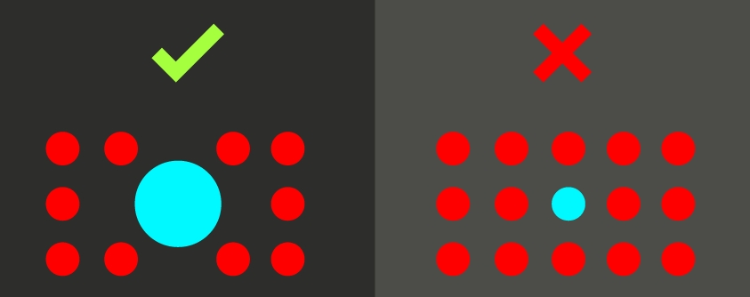

Anterior
Próximo
Ênfase
A ênfase se refere ao destaque que um objeto possui, esse mesmo conceito se encontra na animação, e, apesar
de ser um conceito subjetivo, é bem mais fácil de ser compreendido, pois refere-se diretamente à atenção que
um objeto chama para si em relação aos demais.
